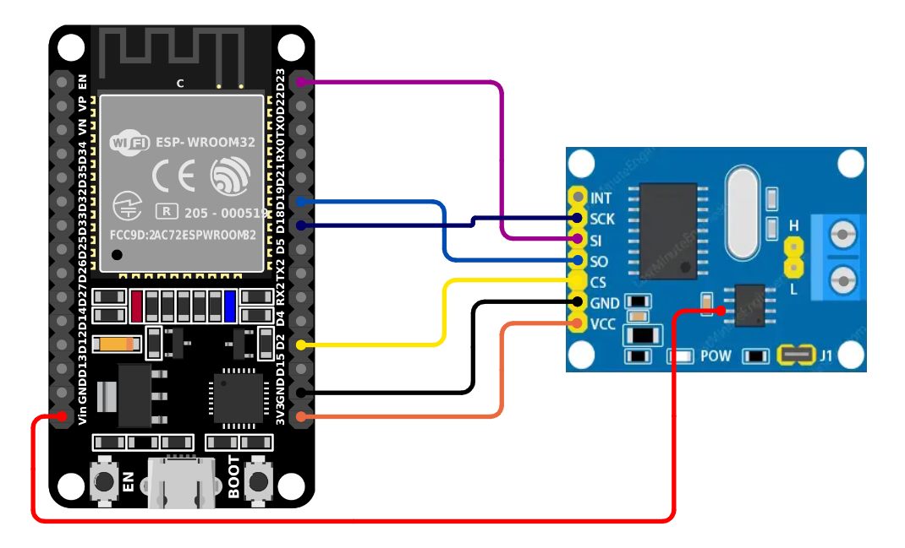
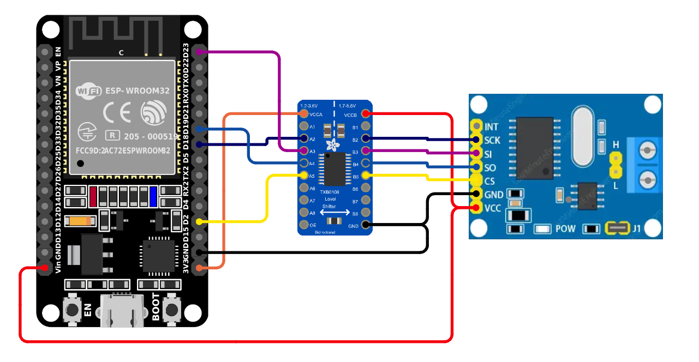
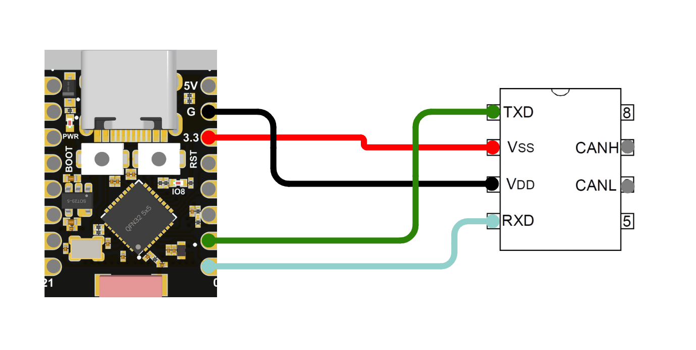

Features
Doggie supports the following features:
twai: Enable the internal CAN controller (TWAI)mcp: Enable the MCP2515 SPI interface as CAN controllerble: Enable BLE interface
By default twai and ble are enabled.
For example:
# Doggie on ESP32c3 with TWAI and BLE
DEFMT_LOG=off cargo esp32c3 --bin doggie
# Doggie on ESP32 with MCP2515 and BLE
DEFMT_LOG=off cargo esp32 --bin doggie --no-default-features --features mcp,ble
Supported Configurations
The ESP32 implementation supports the following configurations.
As the ESP32 doesn't have 5v tolerant GPIOs, we should modify the MCP2515 or use a logic level shifter in order to make it compatible. Read MCP2515 module compatibility note for more information.
-
USB, UART0 or BLE, and MCP2515 (SPI to CAN)
- The USB port, the UART0 port and the BLE of the ESP32 can be used for communication with the host system.
- The MCP2515 (SPI to CAN) module is used for CAN Bus communication.
- This configuration allows the device to interface with a CAN network while communicating with the host via USB or BLE.
Connections (MCP2515 mod):
Function MCP2515 Vcc 3.3 VCC Vcc 5v Tranceiver Vcc GND GND MOSI SI MISO SO Clock SCK CS CS 
Connections (MCP2515 with level shifter):
Function Level Shifter MCP2515 Vcc - 5v GND - GND MOSI <-----------> SI MISO <-----------> SO Clock <-----------> SCK CS <-----------> CS 
-
USB, UART0 or BLE, and TWAI (Internal controller)
- The USB port, the UART0 port and the BLE of the ESP32 can be used for communication with the host system.
- The TWAI controller is used for CAN Bus communication.
- This configuration allows the device to interface with a CAN network using only a transceiver while communicating with the host via USB or BLE.

Connections:
Function Tranceiver Vcc VCC GND GND CAN TX TX CAN RX RX For each esp32 varian we will use different pins that are defined but they could be easily changed in the code. Some variants are not implemented but are compatible and will be implemented on demand.
Connections variants:
Function ESP32 ESP32c3 Vcc 3.3 3v3 3.3 Vcc 5v VIN/5v 5v GND GND G MOSI D13 6 MISO D12 5 Clock D14 9 CS D15 7 CAN TX D4 10 CAN RX D3 9 LOGS (UART) D10 3